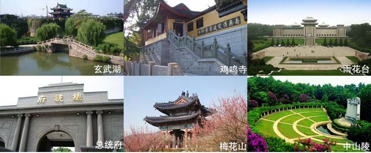

南京是中国著名的四大古都及历史文化名城之一。千百年来，奔腾不息的长江不仅孕育了长江的文明，也催生了南京这座江南城市。南京襟江带河，依山傍水，钟山龙蟠，石头虎踞，山川秀美，古迹众多。早在上个世纪30年代，著名文学家朱自清先生游历南京后，写下的《南京》一文中就有这样一段评价：“逛南京像逛古董铺子，到处都有些时代侵蚀的痕迹。你可以揣摩，你可以凭吊，可以悠然遐想……”
玄武湖公园：玄武湖公园位于南京城中，钟山脚下的国家级风景区、江南三大名湖玄武湖之中，是江南最大的城内公园。玄武湖历史上曾有过“五洲公园”之称。
鸡鸣寺： 又称古鸡鸣寺，位于鸡笼山东麓山阜上，是南京最古老的梵刹之一。康熙皇帝南巡时，曾登临寺院，并为这座古刹题书了“古鸡鸣寺”大字匾额。
雨花台：中国新民主主义革命的纪念圣地，是重点文物保护单位、爱国主义教育示范基地。
总统府：中国最大的近代史博物馆。南京总统府已有600多年的历史，1840年鸦片战争至1949年人民解放军占领南京的100多年里，这里多次成为中国政治军事的中枢、重大事件的策源地，中国一系列重大事件或在这里发生，或与这里密切相关，一些重要人物都在此活动过。
梅花山：梅花山以及山下的“万株梅园”占地400余亩，有230个品种，13000余株梅树，以品种奇特著称，为四大梅园之一，每年春季举办有“中国南京国际梅花节”。
中山陵：中山陵是中华民国国父、中国民主革命的先行者孙中山的陵墓，位于东郊紫金山南麓，西邻明孝陵，东毗灵谷寺。
更多详细信息请见： http://lvyou.baidu.com/scene/view/1e7451eeeb69e222608ca2f4
推荐旅游公司：南京中旅集团、江苏中青旅游网、中国康辉南京国际旅行社